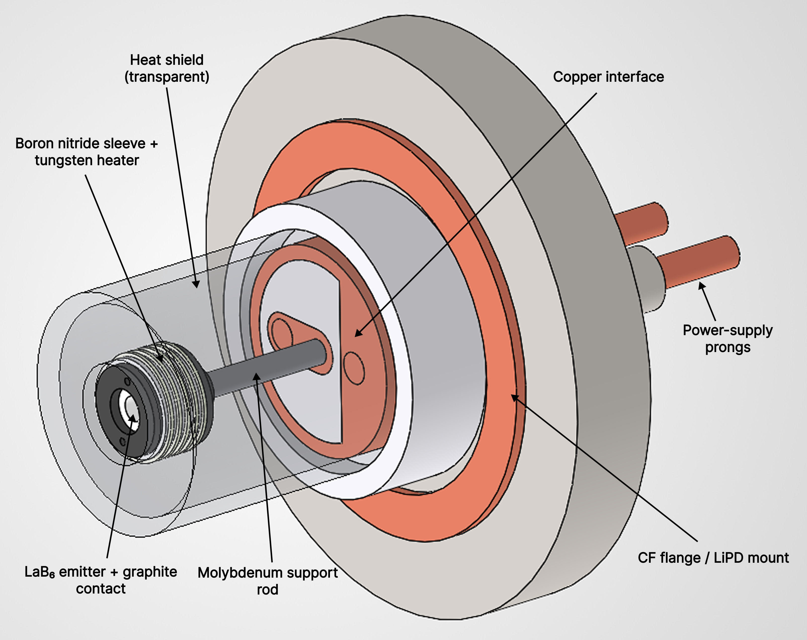
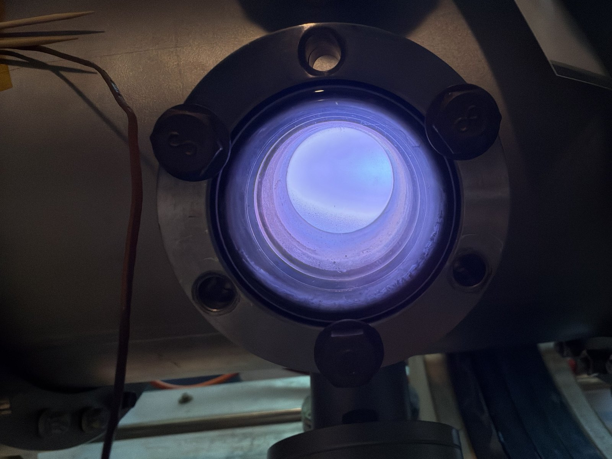
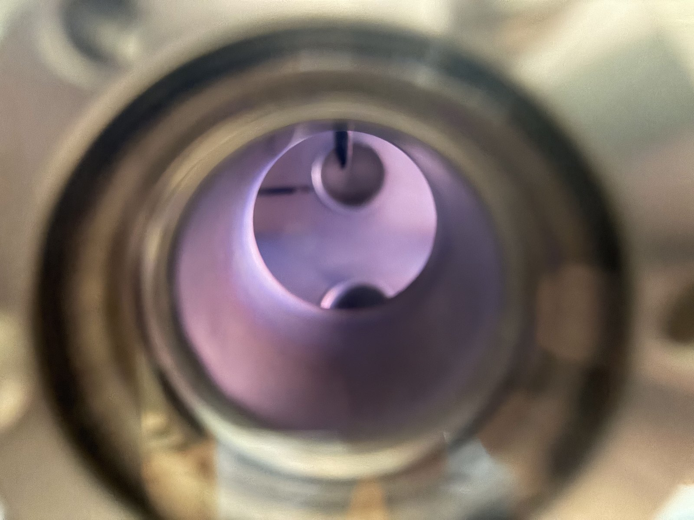
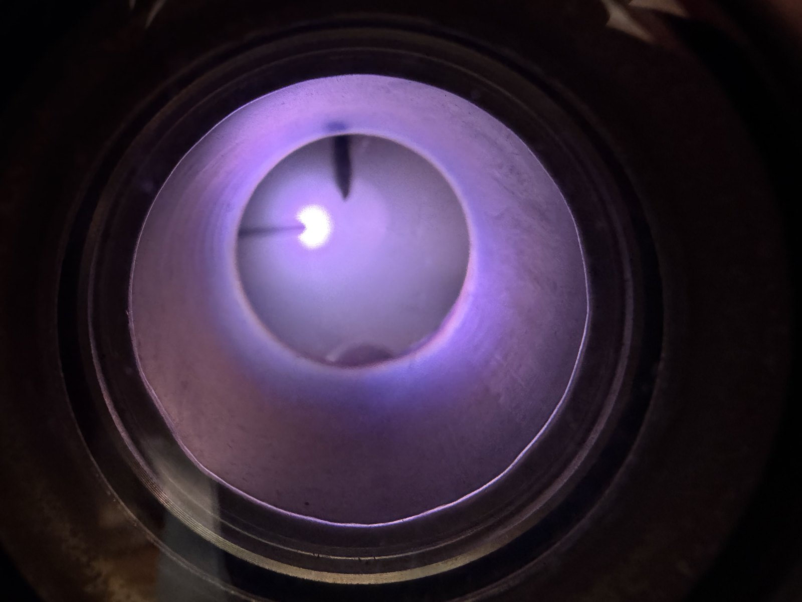

Experimental Plasma Hardware
LaB6 Cathode Development
May 2026 – Present
I designed and built a LaB6 cathode for Swarthmore’s Little Plasma Device (LiPD). The assembly uses a 1000 W heater circuit, refractory materials, and a CF-flange vacuum interface. It produced its first plasma at 40 A and later ran at the full 50 A heater-current design point.
CAD, analysis, fabrication, assembly, and test integration.
High-temperature LaB6 cathode mounted through a CF flange.
Full heater-current design point reached with a bright argon discharge.
Thermal modeling, resistance sizing, machining, and vacuum hardware.
Why LaB6?
LiPD is a roughly quarter-scale plasma device with similarities to WHAM. Its existing hot-tungsten electron source limited beam current and plasma density, so we wanted to try a LaB6 emitter with higher thermionic emission.
LaB6 has a lower work function than tungsten and emits strongly near 2000 K. The harder part was getting the emitter that hot without losing heat through the supports or compromising the electrical and vacuum connections.
Assembly and materials
I modeled the assembly in SolidWorks around LiPD’s existing CF-flange connection. The emitter needed to sit close to the heater while staying supported and electrically isolated where necessary.
Copper and molybdenum parts carry current and support the assembly. A graphite contact holds the LaB6, a tungsten heater wraps a boron-nitride sleeve, and the heat shield reduces radiative losses while forming part of the electrical return path.

The available supply was rated for 50 A at 20 V, so the full 1000 W design point required a total heater-circuit resistance of 0.4 Ω. I sized the tungsten wire and its electrical contacts with that resistance and the heat transfer in mind.
At these temperatures, the supports and contacts can become major paths for heat loss, and material compatibility matters. I had to account for conduction, radiation, electrical isolation, and the behavior of each component at temperature.


Changing the emitter geometry
I started with disk-shaped LaB6 emitters to work out the support, heating, and insulation geometry.
We then switched to a cylindrical emitter region with the tungsten heater wrapped around it. That geometry was the first to exceed 2000 K in the thermal simulations, so it became the basis of the final design.
Prior LaB6 cathode work also suggested that plasma bombardment can help maintain emission temperature after a discharge is established, linking the heater geometry directly to the plasma behavior the source was intended to produce.


Thermal analysis
I used SolidWorks thermal FEA to estimate emitter temperature and heat loss through the surrounding hardware. The target was roughly 2000 K at the LaB6, without overheating the contacts and supports.
Target temperature range for strong LaB6 thermionic emission.
Maximum electrical power available from the 50 A, 20 V supply.
Required total resistance to draw the full current from the power supply.
Concentrate heat at the emitter while limiting conductive and radiative losses.


First plasma and commissioning
The cathode produced its first visible plasma on July 17, 2026, at 40 A heater current. After further commissioning, it ran continuously at the intended 50 A heater current, with a bright argon discharge visible through LiPD’s viewports.
We also installed an axial Langmuir probe for voltage-current sweeps and plasma-column measurements while varying source and device conditions.


Plasma and diagnostics
These views show the source, the broader plasma column, and the axial probe during high-current testing.



Fast-Ion Orbit Modeling in WHAM Fields
I also worked on a separate Python model of fast-ion orbits in WHAM magnetic fields. That project has its own page.